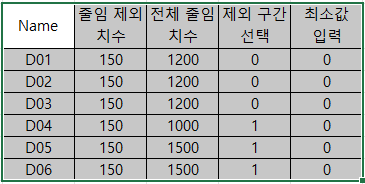

FSC — 16_Stretch
FSC
선택한 Rhino 도면 영역을 CPlane X(U) 방향으로만 자동 압축하는 Drawing Shortening 명령입니다.
치수점 배열을 분석해 긴 구간만 비율로 줄이고, 줄인 후에도 치수값은 원래 값으로 유지합니다.
사용 목적
실제 형상 길이가 폼에 들어갈 수 있는 길이를 초과할 때, 기준값보다 긴 구간만 선택적으로 압축하여
도면을 짧게 표시합니다. 형상, 치수, 텍스트, 포인트 등을 함께 이동/변형하여 도면의 X 방향 길이를 줄입니다.
동작 흐름
| 순서 | 단계 | 설명 |
|---|
| 1 | 영역 드래그 선택 | 명령 실행 후 마우스로 압축할 도면 영역을 드래그합니다. 드래그 사각형은 현재 뷰의 CPlane 기준으로 계산됩니다. |
| 2 | 객체 자동 수집 | 선택 창과 겹치거나 창 안에 있는 객체를 수집합니다. 잠김/숨김/삭제 객체는 제외합니다. |
| 3 | 프로파일 인식 | Profile로 시작하는 레이어의 Text에서 도면 번호를 읽고, 첫 단어로 AutoScale.dat의 min_ds 값을 찾습니다. |
| 4 | 치수점 수집 | NC_BottomPoint의 가장 작은 U 좌표를 좌측 기준으로 삼고, LinearDimension 끝점과 Point 객체의 U 좌표를 수집합니다. |
| 5 | 압축 구간 분석 | 연속 치수점 사이 거리가 min_ds보다 큰 구간만 압축 대상으로 분류합니다. |
| 6 | 목표 거리 입력 | 현재 전체 폭과 최소 압축 가능 폭을 표시하고 목표 압축 거리를 입력받습니다. Enter만 누르면 최소 압축 가능 폭을 사용합니다. |
| 7 | 치수 고정 | min_ds보다 큰 LinearDimension은 현재 측정값을 고정 텍스트로 바꿔 압축 후에도 원래 치수를 표시합니다. |
| 8 | 구간별 스트레치 | 오른쪽 구간부터 순서대로, 각 압축 구간 중앙보다 오른쪽의 제어점/객체를 CPlane X 방향으로 당깁니다. |
사전 준비
| 항목 | 설명 |
|---|
NC_BottomPoint 레이어 Point | 도면 좌측 기준 U 좌표입니다. 없으면 드래그 선택창의 왼쪽 U 좌표를 기준으로 사용합니다. |
| LinearDimension | 압축할 구간의 치수 끝점을 수집하는 기준입니다. 치수점이 최소 2개 필요합니다. |
Profile* 레이어 Text | 도면 번호를 읽어 AutoScale.dat에서 프로파일별 min_ds를 찾습니다. |
RCWFolder 폴더의 AutoScale.dat | 프로파일별 압축 기준값 파일입니다. 없거나 해당 프로파일이 없으면 기본 min_ds=100을 사용합니다. |
사용 방법
- 도면에 LinearDimension과 필요한 기준 Point가 배치되어 있는지 확인합니다.
- Rhino 명령창에
FSC를 입력하고 Enter를 누릅니다.
- "FSC: 드래그하여 압축할 도면 영역을 선택하세요." 메시지가 나오면 압축할 도면 영역을 마우스로 드래그합니다.
- 선택된 객체가 하이라이트되고, 명령창에 치수점과 압축 대상 구간 정보가 출력됩니다.
- "목표 압축 거리" 프롬프트에서 원하는 최종 폭을 입력합니다. Enter만 누르면 최소 압축 가능 폭이 적용됩니다.
- 도면이 CPlane X 방향으로 자동 압축되고, 명령창에 압축 구간 수와 총 단축 거리가 출력됩니다.
실행 예시

FSC - X축 Drawing Shortening 전후 비교
FSC - 구간별 스트레치 실행 과정
주요 내용
| 항목 | 설명 |
|---|
| 선택 방식 | 일반 Rhino 선택 프롬프트가 아니라 마우스 드래그 창으로 객체를 자동 수집합니다. 오른쪽 클릭 또는 Esc로 취소할 수 있습니다. |
| 압축 방향 | 현재 뷰 CPlane의 XAxis 방향으로 압축합니다. 모델 월드 X축과 다를 수 있습니다. |
| 압축 기준 | AutoScale.dat에서 읽은 min_ds보다 긴 구간만 압축합니다. 기본값은 100입니다. |
| 최소 구간 크기 | 압축 대상 구간은 최소 30 길이를 유지합니다. |
| 목표 거리 보정 | 입력한 목표 거리가 최소 압축 가능 폭보다 작으면 최소값으로 보정합니다. 현재 폭보다 크거나 같으면 압축하지 않습니다. |
| 치수 고정 | min_ds보다 큰 LinearDimension은 백틱(`) 고정 텍스트로 바뀌어 원래 측정값을 유지합니다. |
| 곡선 처리 | NURBS 제어점 중 압축 기준선 오른쪽에 있는 점만 이동합니다. |
| Brep 처리 | Brep 전체가 압축 기준선 오른쪽에 있을 때 객체를 이동합니다. |
| Annotation 처리 | LinearDimension은 한쪽 끝점만 기준선 오른쪽이면 해당 끝점만 이동하고, 양쪽이면 전체를 이동합니다. |
| 적용 환경 | Rhino |
AutoScale.dat 기준
| 항목 | 설명 |
|---|
| 파일 위치 | RCWFolder 폴더의 AutoScale.dat |
| 프로파일 이름 | Profile* 레이어 Text의 첫 단어를 사용합니다. 첫 단어는 - 또는 공백 앞까지입니다. |
| 사용 열 | 탭으로 구분된 행에서 [0]은 프로파일 이름, [1]은 min_ds로 사용합니다. |
| 기본값 | 파일이 없거나 프로파일을 찾지 못하면 min_ds=100을 사용합니다. |
실행 결과
| 항목 | 설명 |
|---|
| 도면 압축 | 압축 대상 구간이 비율에 맞게 CPlane X 방향으로 줄어듭니다. |
| 치수 유지 | 긴 구간의 치수는 원래 측정값으로 고정되어, 줄인 후에도 실제 치수값을 표시합니다. |
| 명령창 출력 | 치수점 수, 전체 폭, 최소 압축 가능 폭, 구간별 압축 거리, 총 단축 거리가 출력됩니다. |
참고: Rhino 버전은 AutoCAD 도움말의 제외 구간 선택, MinFabdist 자동값,
NC 데이터 테이블 이동 기능과 다르게 동작합니다. 현재 코드 기준으로 드래그 선택 영역, min_ds,
목표 압축 거리 입력을 중심으로 처리합니다.
주의: 선택 범위 안에 충분한 LinearDimension 또는 Point 기준점이 없으면
치수점이 부족합니다 메시지와 함께 실행되지 않습니다. 압축 방향은 현재 CPlane에 따라 달라지므로 실행 전 CPlane 방향을 확인하세요.